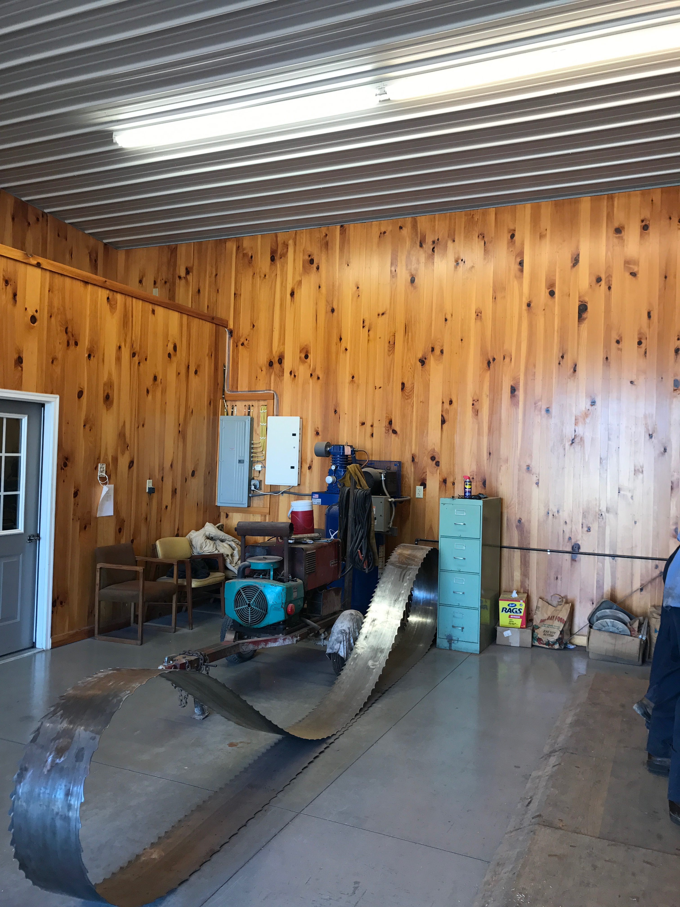
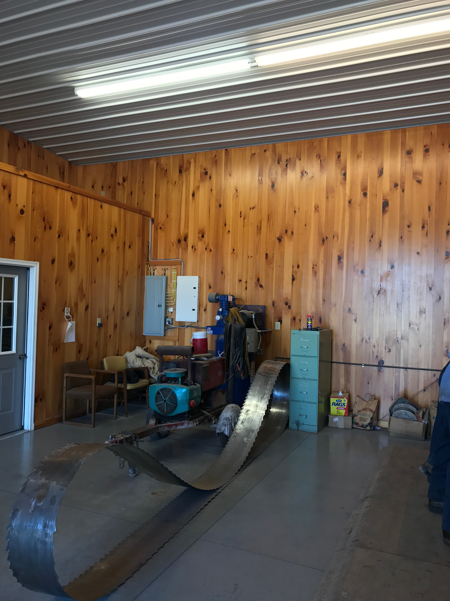
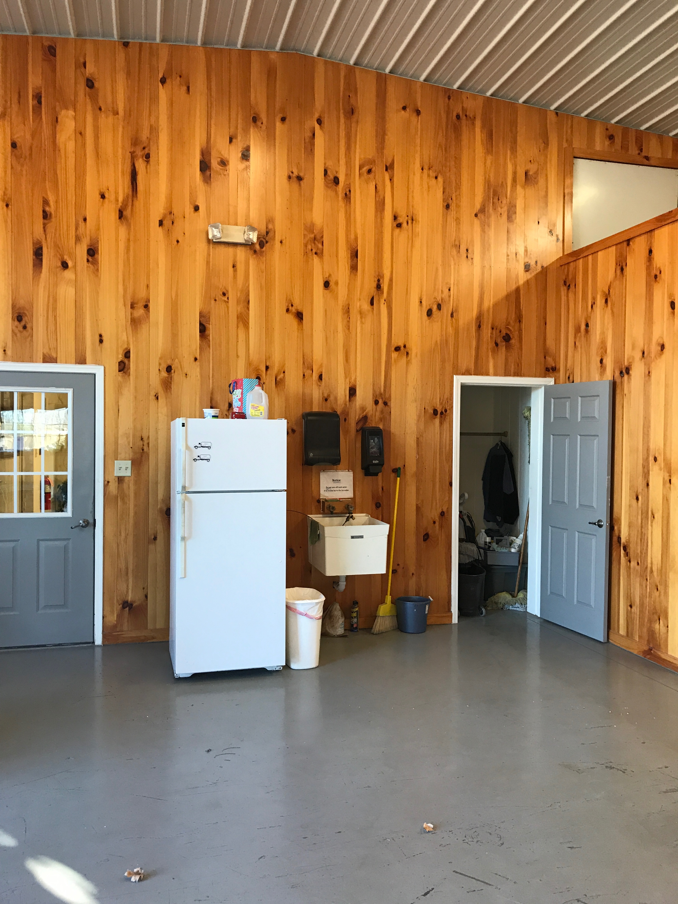
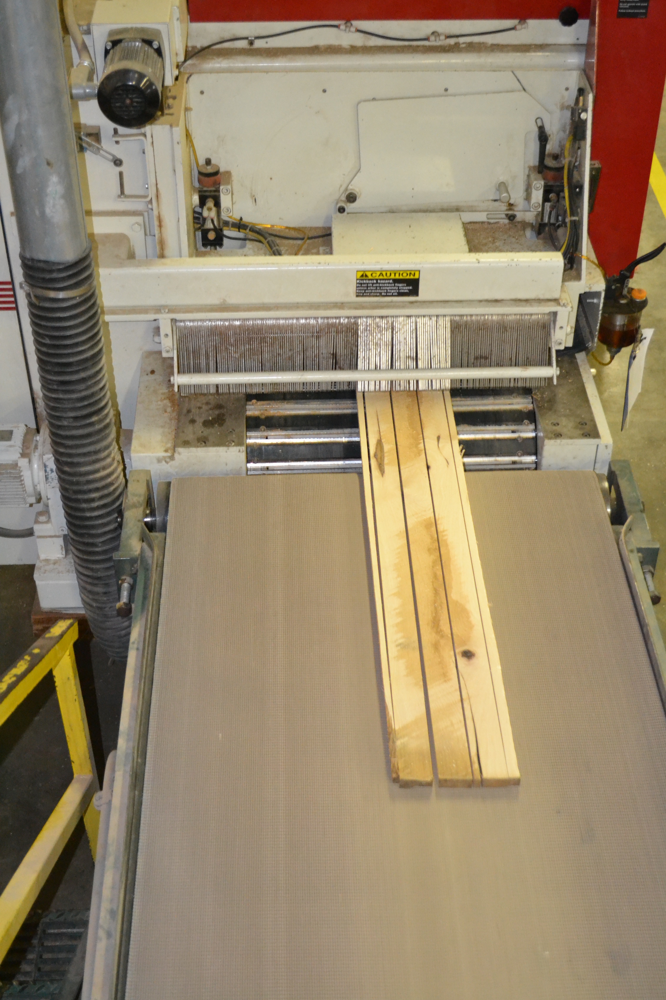
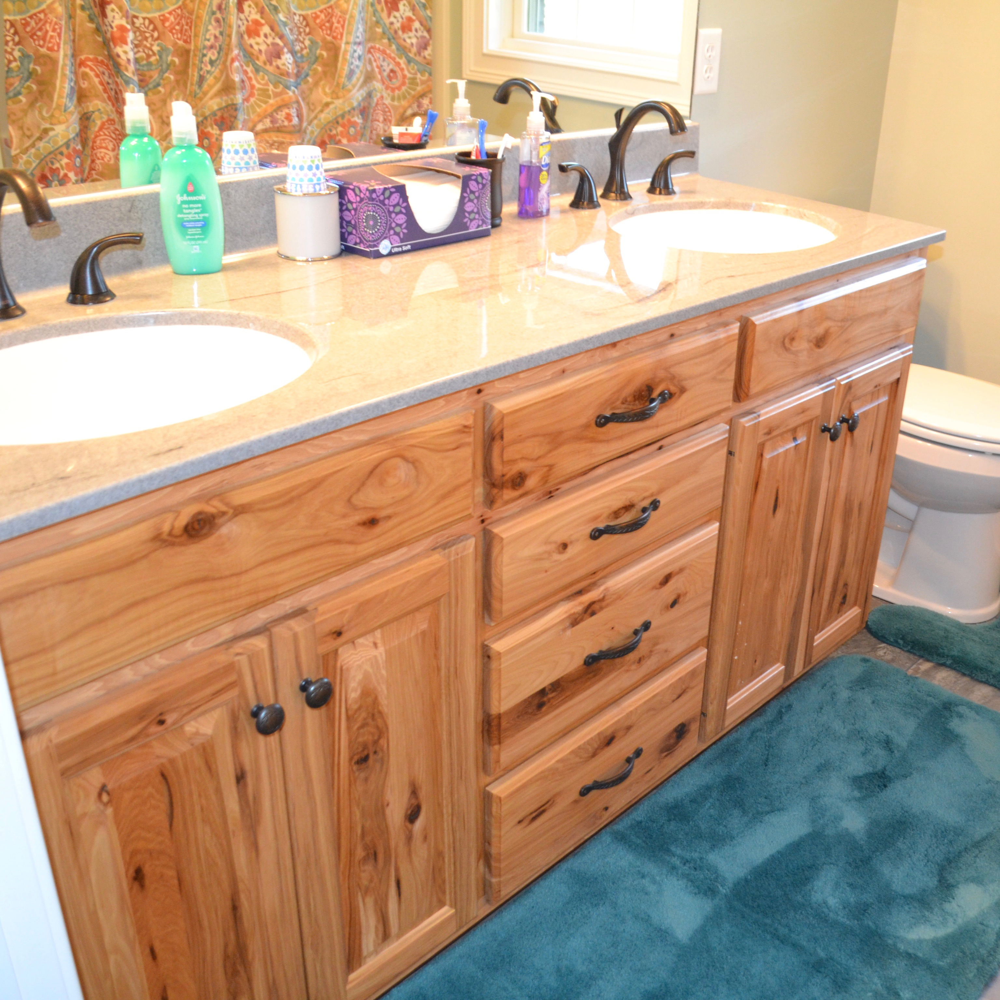
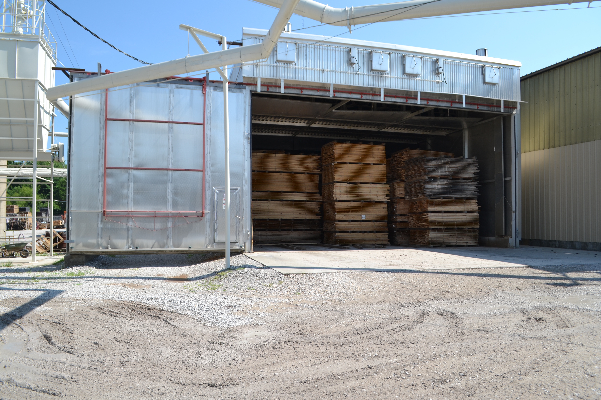

Products
Unfinished Hardwood Flooring
We cut our hardwood flooring out of FAS grade lumber, which is what separates us from our competitors. By using FAS grade lumber we have the ability to get long cuts (up to 12 feet), which really brings out the characteristics in each specific species. In addition, if you are looking for more character, we can cut the flooring out of 1 common or 2 common lumber. This will also make the flooring cheaper.
Delivery is available - Don’t hesitate to call for a price quote!Dimensions Available:
- Length – 1’-12’
- Width – 1 1⁄4” – 9”
- We also have the ability to do S4S Top Nail flooring.
- White Oak
- Red Oak
- Ash
- Walnut
- Hickory (Rustic available)
- Hard Maple
- Kentucky Coffee Tree
- Beech
- Cherry
Paneling
Glued panels for cabinet and drawer fronts are available in any native species. We have the
ability to produce any width up to 36” and any length.
**Special orders are available as well.
Wall paneling is available in any native species. We can produce any length up to 14’ and any width up to 9”.
|  |  |  |
Furniture/Cabinet Dimension
Furniture and cabinet dimension are available in any native species. We can produce any length and any width up to 8”. Custom panels, rails, and stiles are also available, along with drawer fronts/sides.
|  |  |
Kiln Dried Lumber
We can dry any species of lumber in one of our four kilns.
